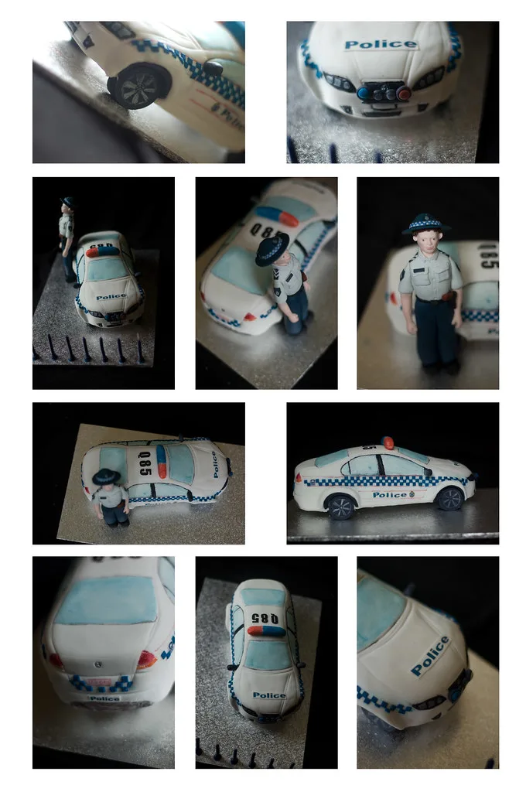

경찰청, '장윤기 사건' 관련 수사 쇄신 약속
경찰의 부실 수사와 유착 의혹이 불거진 이른바 '장윤기 사건'과 관련해 유재성 경찰청장 직무대행이 20일 공개 사과와 함께 대대적인 수사 쇄신을 약속했다. 유 직무대행은 이날 "뼈를 깎는 심정으로 경찰 수사를 쇄신하겠다"며 조직 전반의 개혁 의지를 밝혔다. 수사기관 수장이 직접 나서 고강도 쇄신을 언급한 것은 이번 사건이 경찰 조직 전체의 신뢰 문제로 번지고 있다는 위기감을 반영한 것으로 풀이된다.
이 사건은 초기 수사 단계부터 부실 논란이 제기되며 여론의 도마에 올랐다. 수사 과정에서 기본적인 증거 확보와 사실 확인이 제대로 이뤄지지 않았다는 지적이 나왔고, 이후 수사 관계자와 사건 관련자 사이의 유착 정황까지 불거지면서 파장이 커졌다.
단순한 수사 미숙을 넘어 수사의 공정성 자체가 의심받는 상황이 되자, 경찰 안팎에서는 진상 규명과 책임자 문책을 요구하는 목소리가 높아져 왔다. 시민사회에서는 유사 사례가 반복되지 않도록 수사 과정에 대한 외부 감시 장치를 강화해야 한다는 주장도 나온다.
경찰청은 이번 사건을 계기로 수사 시스템 전반을 재점검할 방침인 것으로 알려졌다. 사건 배당과 수사 지휘 체계, 수사관의 이해충돌 관리, 내부 감찰 기능 등이 점검 대상으로 거론된다. 특히 유착 의혹과 같은 비위 가능성을 사전에 차단할 수 있는 내부 통제 장치를 어떻게 실효성 있게 만들 것인지가 핵심 과제로 꼽힌다.

경찰 수사에 대한 국민 신뢰는 수사권 구조와도 맞물린 민감한 문제다. 검경 수사권 조정 이후 경찰의 수사 권한과 책임이 크게 확대된 상황에서, 이번과 같은 부실 수사 논란은 경찰 수사 역량 전반에 대한 회의론으로 이어질 수 있기 때문이다. 경찰로서는 이번 쇄신 약속의 이행 여부가 확대된 수사권의 정당성을 입증하는 시험대가 되는 셈이다.
유 직무대행이 공언한 쇄신안이 구체적으로 어떤 내용을 담을지, 그리고 실제 조직 문화의 변화로 이어질지는 앞으로 지켜봐야 할 대목이다. 말뿐인 사과에 그치지 않으려면 사건의 철저한 진상 규명과 엄정한 책임 추궁이 선행되어야 한다는 것이 여론의 대체적인 요구다.